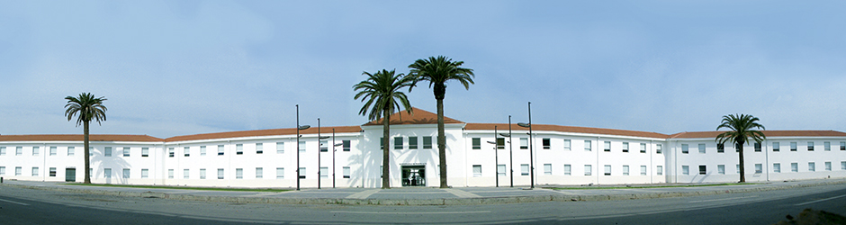
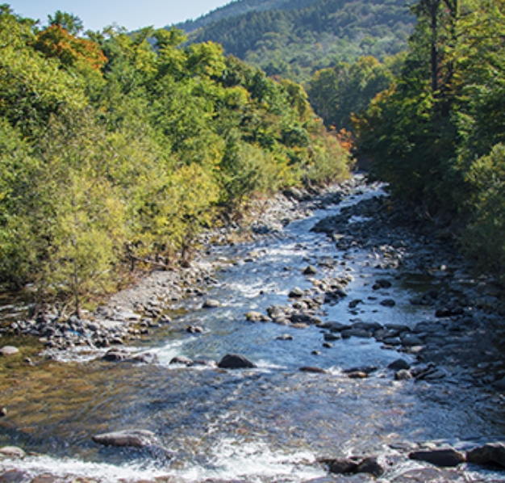
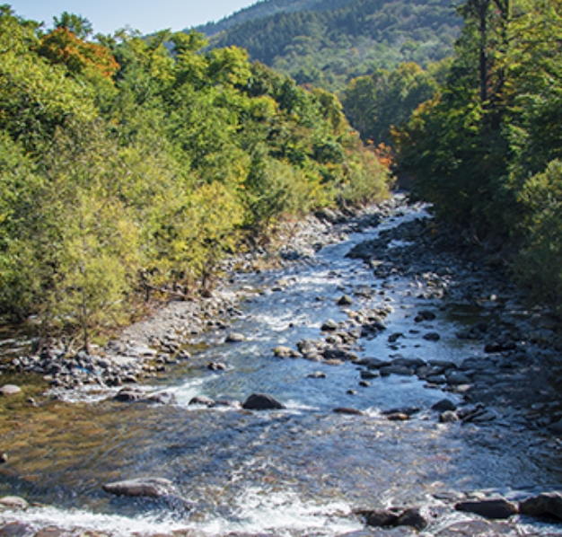

Atracciones principales
- La cascada de las ánimas
- Pueblito las Vizcachas
- Reserva Nacional Río Clarillo
- Embalse del Yeso
Vivir en una comuna ofrece numerosas ventajas que enriquecen nuestra experiencia de vida. En primer lugar, la vida comunitaria nos brinda la oportunidad de establecer conexiones significativas con nuestros vecinos, fomentando un sentido de pertenencia y colaboración mutua. Al interactuar con la comunidad local, se crean lazos sociales sólidos y se promueve un ambiente de solidaridad, donde podemos compartir intereses, ideas y apoyo mutuo.
Galería de imágenes
 
